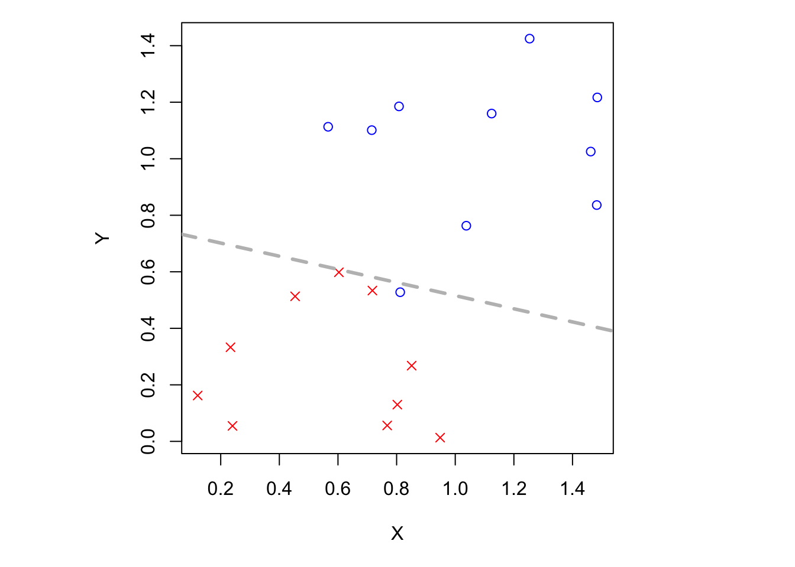
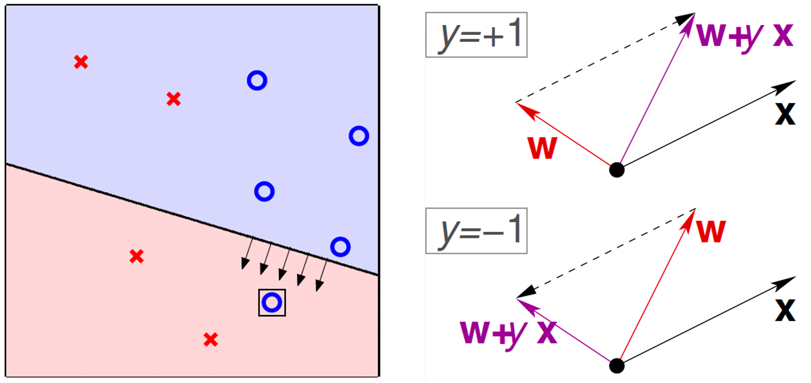
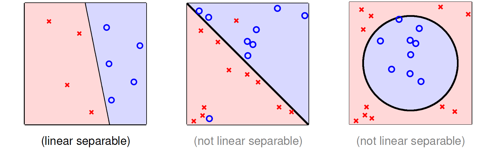

機器學習：感知器演算法(Perceptron Learning Algorithm, PLA)
statistics
machine learning
分類器的訓練方式，透過適應性調整權重來學習與分類不同類別的數據。
基本概念
上一章我們談到銀行發卡的例子。基於這個例子，我們要來介紹感知器演算法。假設我們已經搜集到所有銀行客戶的資料，我們便可以建立一個 \(d\) 維度的向量 \(\mathbf{x} = (x_{1}, x_{2}, \cdots, x_{d})\)，並計算其加權分數(weighted score)。則 \[ \begin{aligned} \text{approve if }&\; \sum^{d}_{i=1}w_{i}x_{i}> \text{threshold}\\ \text{deny if }&\; \sum^{d}_{i=1}w_{i}x_{i}< \text{threshold} \end{aligned} \]
其中 \(x_{i}\) 為每個維度的數據，\(w_{i}\) 為每個維度的重要性，亦即如果我們認為負債總額相當重要，則其權重就會相較其他維度更多。
接下來我們需要電腦告訴我們是否應該發卡。我們定義發卡是好的(good)，記為 \(+1\)；反之，若拒絕發卡則為不好的(bad)，記為 \(-1\)，剛好在門檻上記為 \(0\)（我們在此將其視為不重要，因此忽略它），即電腦應輸出 \[ \mathcal{Y} = \{+1, -1\} \] 因此我們可以得到一個線性方程式 \(h \in \mathcal{H}\)，表達如下： \[ h(\mathbf{x}) = \operatorname{sign}\Biggl(\Biggl(\sum^{d}_{i=1}w_{i}x_{i}\Biggr)- \text{threshold}\Biggl) \] 為了簡化，我們引進維度 \(0\)，並考慮以下改寫的方程式： \[ h(\mathbf{x}) = \operatorname{sign}\Biggl(\Biggl(\sum^{d}_{i=1}w_{i}x_{i}\Biggr)+ \underbrace{(-\text{threshold})}_{w_{0}} \cdot \underbrace{(+1)}_{w_{0}}\Biggl) \] 因此我們可以將維度 \(0\) 收納進前方的加總符號，使其從 \(0\) 開始累加，最後改寫為矩陣的形式： \[ \operatorname{sign}\Biggl(\sum^{d}_{i=0}w_{i}x_{i}\Biggr) = \operatorname{sign}(\mathbf{w}^{\top}\mathbf{x}) \] 例 假設我們今天只看考慮兩個維度，因此 \(h\) 的形式如下： \[ h(\mathbf{x}) = \operatorname{sign}(w_{0} + w_{1}x_{1} + w_{2}x_{2}) \] 我們可以在二維的歐式空間繪製以下的圖，其中
- \(\mathbf{x}\)：平面上或 \(\mathbb{R}^{d}\) 上的點
- \(y\)：\(\color{blue}{\circ}\) (\(+1\))，\(\color{red}{\times}\) (\(-1\))
- \(h\)：平面上或 \(\mathbb{R}^{d}\) 上的直線，若屬正數則在直線的右邊，屬負數則在左邊。
可看出感知器演算法其實就是一種「線性分類」(linear/binary classifiers)，儘管到了更高維，在幾何上仍有線性的意義。
知錯能改的演算法
A fault confessed is hald redressed.
我們之前提到過，因為實際上的公式 \(f\) 是未知的，我們試圖找出一個公式，能夠完美的預測或至少在預測上表現良好，也就是 \[ g \approx f \] 但由於不知道 \(f\)，我們最卑微的要求就是根據「從 \(f\) 抽取出來的資料」，使得 \(g\) 與 \(f\) 一樣或至少很接近，即是要求 \[ g(\mathbf{x}_{n}) = f(\mathbf{x}_{n}) = y_{n} \] 不過，我們發現到在二維平面上有無限多條直線，找尋上會十分困難，也就是所有感知器的集合是無限的 (\(\mathcal{H}\) is of infinite size)。
搜尋思維：逐步修正 \(g\)
一個簡單也最直覺的想法，我們先任意挑一個 \(g_{0} \in g\)，如果發現它沒辦法表現的良好，那麼我們就修正，並改為 \(g_{1}\)，重複上述的動作直到我們覺得不能再好為止。這跟人類的學習方式大同小異，我們也是透過不斷地練習、試誤，才能夠達到一定的水準。
以下是一個規則化的操作。首先從某個 \(\mathbf{w}_{0}\) 開始，並假設 \(\mathbf{w}_{0} = \mathbf{0}\)，代表最初一無所知的狀態。令 \(t\) 代表回合數，則對於 \(t = 0, 1, \cdots\)，
找出 \(\mathbf{w}_{t}\) 上錯誤的點，記成 \((\mathbf{x}_{n(t)}, y_{n(t)})\)，其中犯錯的定義為 \[ \operatorname{sign}\bigl(\mathbf{w}^{\top}\mathbf{x}_{n(t)}\bigr) \neq y_{n(t)} \] 即內積的結果與預期的結果異號。
試圖修正它，如果想要正的，就將 \(\mathbf{w}\) 轉向 \(\mathbf{x}\)；如果想要負的，就將 \(\mathbf{w}\) 轉離 \(\mathbf{x}\)，即 \[ \mathbf{w}_{t+1} \leftarrow \mathbf{w}_{t} + y_{n(t)}\mathbf{x}_{n(t)} \]

重複上述動作直到沒有錯誤，回傳最終的 \(\mathbf{w}\) 並稱為 \(\mathbf{w}_{\text{PLA}}\)。
那麼我們要如何認定 \(\mathbf{w}_{t}\) 沒有錯誤呢？一個方法是我們就掃過維度上的每個點，若未發現錯誤則前往下一個點，直到發現錯誤後便進行上述的修正步驟，我們將此演算法稱為 Cyclic PLA。

PLA 的細節探討
上面我們是假設 PLA 在找尋最佳公式的過程中會自動停下來(halt)，但實際上這個過程有可能是停不下來的。不過我們先不討論停不下來的情況，我們只著重在停下來的條件。
我們知道 PLA 會停下的條件是找到一個能夠把資料完美切開或至少能夠將多數資料分割的公式，但是上述條件的前提是「資料要真的能夠被切開」，稱為線性可分(linear separable)。

為了簡化，我們假設資料 \(\mathcal{D}\) 是線性可分，那麼 PLA 是否會停止呢？
我們知道若一筆資料為線性可分，那麼必然存在一條完美的公式 \(\mathbf{w}_{f}\) 使得 \(y_{n} = \operatorname{sign}(\mathbf{w}_{f}^{\top}\mathbf{x}_{n})\)，因此可以得出以下條件： \[ y_{n(t)}\mathbf{w}_{f}^{\top}\mathbf{x}_{n(t)} \geq \min_{n}y_{n}\mathbf{w}_{f}^{\top}\mathbf{x}_{n} > 0 \] 代表每個 \(\mathbf{x}_{n}\) 與直線的距離。接下來我們要衡量 \(\mathbf{w}_{t}\) 與 \(\mathbf{w}_{f}\) 是否接近，方法則是透過內積的方式，若內積的值夠大代表兩者越接近。已知 \(\mathbf{w}_{t+1} = \mathbf{w}_{t} + y_{n(t)}\mathbf{x}_{n(t)}\)，則 \[ \begin{aligned} \mathbf{w}_{f}^{\top}\mathbf{w}_{t+1} &= \mathbf{w}_{f}^{\top}(\mathbf{w}_{t}+y_{n(t)}\mathbf{x}_{n(t)}) \\ &\geq \mathbf{w}_{f}^{\top}\mathbf{w}_{t} + \min_{n}y_{n}\mathbf{w}_{f}^{\top}\mathbf{x}_{n}\\ &> \mathbf{w}_{f}^{\top}\mathbf{w}_{t} + 0 \end{aligned} \] 可知 \(\mathbf{w}_{f}^{\top}\mathbf{w}_{t+1}\) 在更新過後會變得比 \(\mathbf{w}_{f}^{\top}\mathbf{w}_{t}\) 來得大，意味著兩條線看似會越來越接近。但我們忽略了向量長度的問題，因此以下要考慮這個因素。
我們提到 \(\mathbf{w}_{t}\) 會更新的條件是 \[ \operatorname{sign}(\mathbf{w}_{t}^{\top}\mathbf{x}_{n(t)}) \neq y_{n(t)} \] 更簡單的表示方式為之前提過的，若 \(y_{n(t)}\) 與 \(\mathbf{w}_{t}^{\top}\mathbf{x}_{n(t)}\) 的內積異號，即 \[ y_{n(t)}\mathbf{w}_{t}^{\top}\mathbf{x}_{n(t)} \leq 0 \] 則我們稱該點有問題，公式必須做更新。
\[ \begin{aligned} \lVert \mathbf{w}_{t+1}\lVert^{2} &= \lVert\mathbf{w}_{t}+y_{n(t)}\mathbf{x}_{n(t)}\lVert^{2}\\ &= \lVert\mathbf{w}_{t}\lVert^{2} + 2y_{n(t)}\mathbf{w}_{t}^{\top}\mathbf{x}_{n(t)} + \lVert y_{n(t)}\mathbf{x}_{n(t)}\lVert^{2}\\ &\leq \lVert\mathbf{w}_{t}\lVert^{2} + 0 + \lVert y_{n(t)}\mathbf{x}_{n(t)}\lVert^{2}\\ &\leq \lVert\mathbf{w}_{t}\lVert^{2} + \max_{n}\lVert y_{n}\mathbf{x}_{n}\lVert^{2} \end{aligned} \] 我們將上述兩個條件進行正規化後，得到以下式子
\[ \begin{equation} \frac{\mathbf{w}_{f}^{\top}}{\lVert\mathbf{w}_{f}\lVert}\frac{\mathbf{w}_{T}}{\lVert\mathbf{w}_{T}\lVert} \geq \sqrt{T} \cdot \text{constant} \end{equation} \]
例 Define \(R^{2} = \max_{n}\lVert \mathbf{x}_{n}\lVert^{2}\), and \(\rho = \min_{n}y_{n}\frac{\mathbf{w}_{f}^{\top}}{\lVert\mathbf{w}_{f}\lVert}\mathbf{x}_{n}\)
We want to show that \(T \leq \square\). Express the upper bound \(\square\) by the two terms above.
Sol